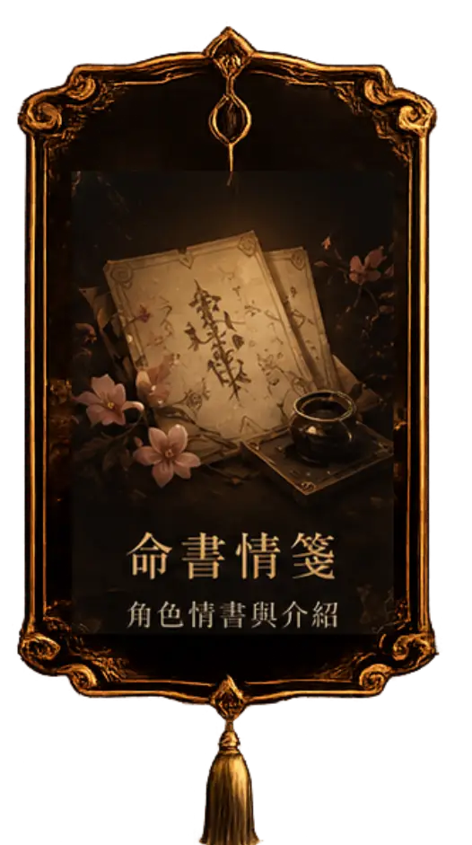
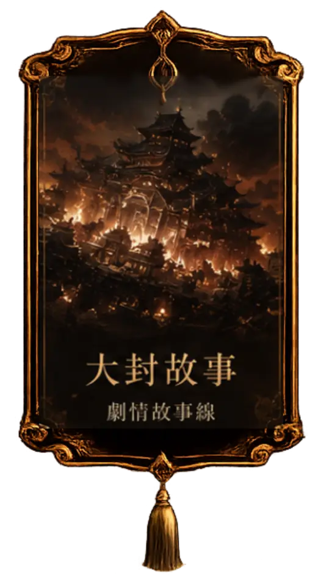
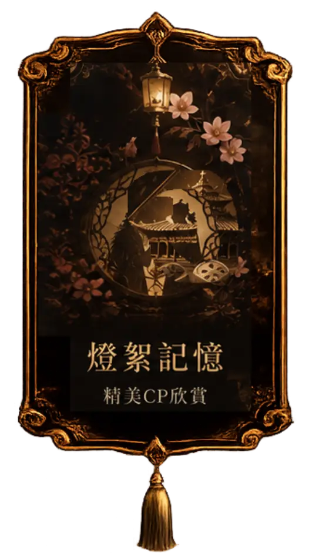

正在展開命簿…
循著微光，前塵入夢
以史為鏡，可以知興替
命簿已開，你可還記得故人？
建議開啟聲音，獲得完整體驗
欲 啟 此 卷
密令既合，前塵方可重現。
落 名 入 卷
此名將載於卷中，伴你走過大封舊事。
等級 1



每日燈火
闔 卷 離 席
此刻離席不會遺失已保存的燈盞、等級與閱卷進度。
燈晝餘燼 · 故事主線
循命書殘跡，閱盡一場被史冊遺忘的前塵。
完成目前章節，即可解鎖下一篇；已讀章節可隨時重溫。
小遊戲
解鎖劇照，永久保存珍貴回憶
有人賣書，也有人賣前塵。
書肆主人 · 眠
書肆主人 · 沐
擇一卷，赴一場前世之約
‹ 左右滑動選擇命書 ›
今生移步換影前世
一紙未寄之書
念卿人
第一章 · 大封舊史
以銅為鏡，可以正衣冠;
以人為鏡，可以明得失。